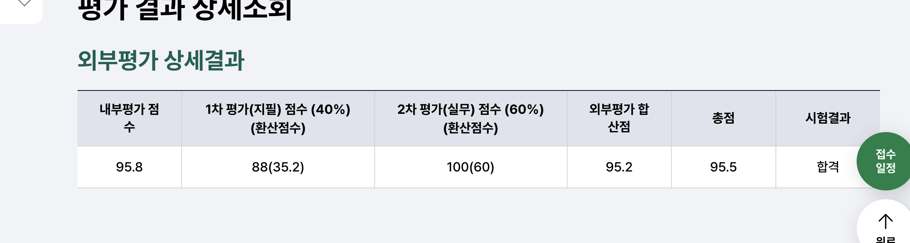

CoolMessenger Gentoo ↗
메시지의 링크가 CEF 브리지를 거쳐 Windows Shell로 전달되는 경로를 추적했습니다. 링크 검증 누락을 제보하고, 조치된 버전의 코드를 정적으로 비교했습니다.
KVE-2026-1543High패치 완료 · 포상 70만 원
서버 환경 구성 → 링크 처리 분석 → PoC → 패치 비교 읽기 ↗메시지의 링크가 CEF 브리지를 거쳐 Windows Shell로 전달되는 경로를 추적했습니다. 링크 검증 누락을 제보하고, 조치된 버전의 코드를 정적으로 비교했습니다.
배열 밖 메모리를 읽고 쓰는 조건에서 실행 주소를 찾아 제어 흐름을 바꿨습니다. 대회 중에는 ROP로 한 문제를 해결했고, 대회 뒤에는 같은 문제를 FSOP로 다시 풀었습니다.
인증번호 만료와 요청 제한, JWT 유형 검증, Redis 세션 폐기를 구현했습니다. 수정한 동작과 테스트 코드를 PR에 남겼습니다.
100바이트 입력 제한과 GOT overwrite. 스택을 그려 쓰기 주소를 정리한 기록.
fd부터 cmd2까지 13문제의 작성일·핵심 취약점·해결 방법을 표로 정리하고, input2와 horcruxes는 코드와 실행 로그까지 남겼습니다.
Fedora Asahi·QEMU 부팅 환경과 CPU 구조, AArch64 레지스터 학습 기록을 정리했습니다.
프로그램 안에서 입력이 어떻게 처리되는지 궁금해서 바이너리를 분석합니다. 주로 Windows 클라이언트를 역공학하고, Linux pwnable 문제를 풉니다.
CoolMessenger Gentoo를 분석할 때는 클라이언트를 실행할 서버부터 필요했습니다. 서버의 라이선스 처리 흐름을 분석해 테스트 환경을 마련한 뒤, 클라이언트의 링크 처리 취약점을 찾아 제보했습니다.
분석에는 AI와 Ghidra MCP를 함께 사용합니다. 코드 구조와 분석 대상을 파악하는 데 도움을 받고, 실행 흐름과 PoC 결과는 디버거와 실제 동작으로 확인합니다. 지금은 ARM64와 Linux 커널을 공부하며 분석 범위를 넓히고 있습니다.

HackQuest 본선 · 사이버 가디언즈 CMX 본선